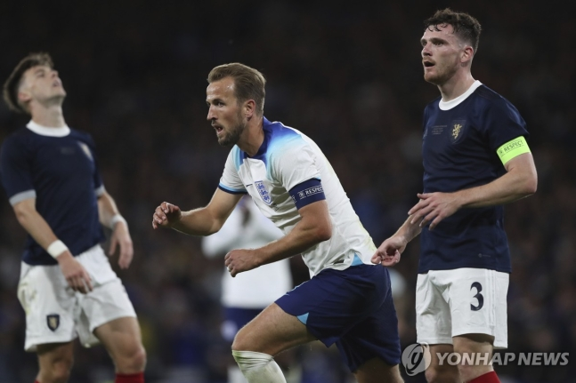

(서울=연합뉴스) 이의진 기자 = 특급 스트라이커 해리 케인(바이에른 뮌헨)이 득점, 수비수 해리 매과이어(맨체스터 유나이티드)는 자책골을 기록한 잉글랜드가 '최초의 A매치 상대' 스코틀랜드를 만나 쾌승을 거뒀다.
잉글랜드는 13일(한국시간) 영국 글래스고의 햄던 파크에서 열린 친선 경기에서 '가장 오래된 라이벌' 스코틀랜드를 3-1로 격파했다.
필 포든(맨체스터 시티)이 전반 32분 선제 득점을 올린 잉글랜드는 3분 만에 주드 벨링엄(레알 마드리드)의 추가 골이 나오면서 일찌감치 2-0으로 달아났다.
후반 1분 마크 게히(크리스털 팰리스)와 교체돼 그라운드를 밟은 매과이어가 후반 22분 크로스를 제대로 걷어내지 못한 게 자책골로 연결돼 스코틀랜드가 한 골을 따라붙었다.
그러나 후반 36분 페널티아크 뒤편에서 수비수 2명을 따돌린 벨링엄이 페널티지역에 있는 케인에게 절묘한 침투 패스를 전달했고, 케인이 침착하게 왼발로 마무리해 잉글랜드가 다시 두 골 차를 만들었다.
케인이 개인 통산 86번째 A매치에서 기록한 59번째 득점이다.
이 경기는 양 팀의 116번째 맞대결이었다. 상대 전적은 잉글랜드가 49승 26무 41패로 앞섰다.
두 팀의 맞대결은 1872년 11월 30일로 거슬러 올라간다. 당시 득점 없이 비겼는데, 이 경기가 세계 최초의 국가대표팀 간 경기로 인정받고 있다.
2022 카타르 월드컵 8강에서 프랑스에 1-2로 져 발길을 돌린 잉글랜드는 이후 5승 1무로 순항 중이다.